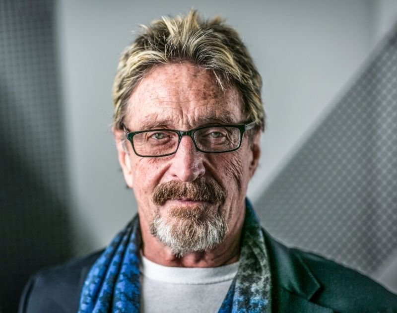

John David McAfee
Early Years
Born in England on September 18th, 1945, not too long after his family relocates to Roanoke, Virginia. He obtained a degree in mathematics at Roanoke College, then started working for a string of tech companies and government agencies such as NASA, Xerox and Booz Allen Hamilton to name a few.
However, during this time he's constantly losing jobs because of drugs and booze. He was selling coke and snorting it while working at Omix and lost his job at Pacific Railroad after showing up to work after doing a whole bag of DMT. When McAfee started working at Lockheed Martin, he speaks of his surprise at being hired and having security clearance. In this interview he says,
"I had a very checkered past prior to joining Lockheed Martin. I assumed that there would be no chance in hell I would ever get security clearance... They asked me very re--, y'know?Revealing questions. 'Had I ever had sex with sheep or, or, or dogs?'... or 'Had I ever taken drugs?' The answer...? Yes. 'Uhh, what kind?' Almost every kind. 'Uhhm, how much?' A lot. 'Have you ever sold drugs?' Yes. So I assumed I would never get the clearance but I did and it came in very quickly. "